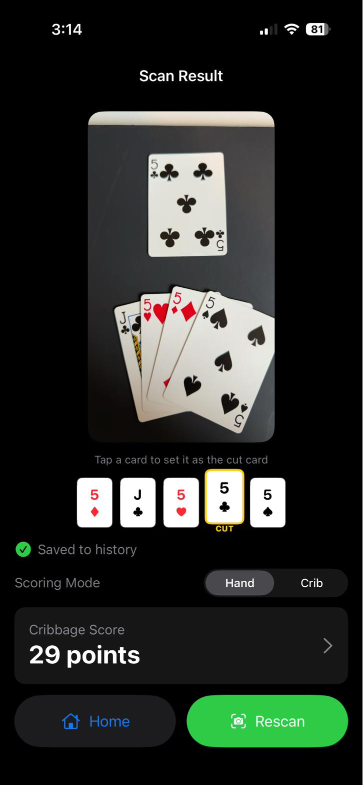
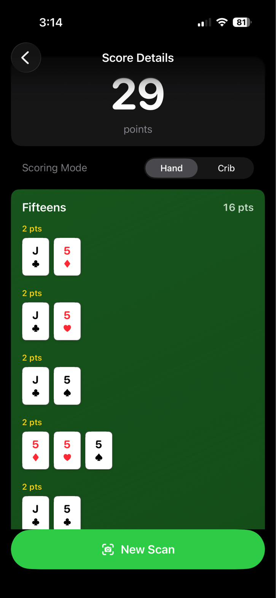
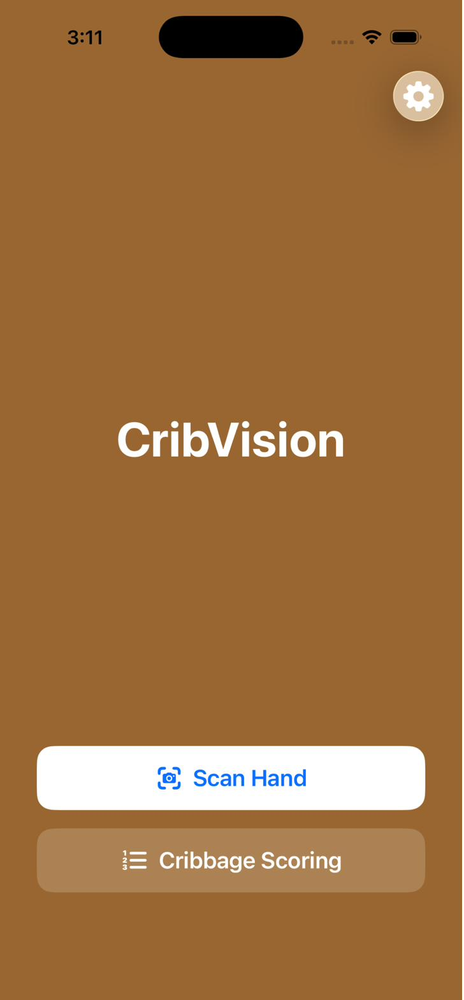
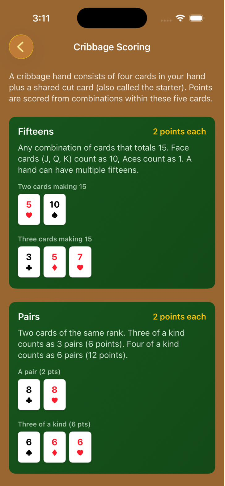

Point. Scan. Score.
CribVision
On-device AI that sees your cribbage hand and counts every point. No math. No miscounts. No arguments.


How it works
Three seconds to a perfect count
1
Point your camera
Lay your four hand cards and the cut card on any surface. CribVision's AI starts detecting immediately — no setup, no scanning gesture needed.
2
Cards lock in
Each card is identified using on-device machine learning. Cards lock in only after consistent detection across multiple frames — filtering out glare, blur, and misreads.
3
See every point
Get a complete breakdown instantly — every fifteen, pair, run, flush, and nob. Tap the score to see exactly which cards contribute to each category.
Features
Built for real cribbage
- On-device AI — Core ML object detection runs entirely on your iPhone. No cloud, no latency, no internet required. Your cards never leave your device.
- Hand and Crib modes — Toggle between hand and crib scoring. Flush rules automatically adjust — 4-card flush counts in hand, only 5-card flush counts in crib.
- Hand history — Track every hand you score. See your average, best, worst, and how many zero-point hands you've been dealt. All stored locally.
- Cribbage scoring guide — Built-in reference explains every scoring category with examples. Useful for beginners and as a quick-check for experienced players.
- Cut card override — Spatial analysis identifies the cut card automatically. Tap to override if needed — one gesture.
Screenshots

